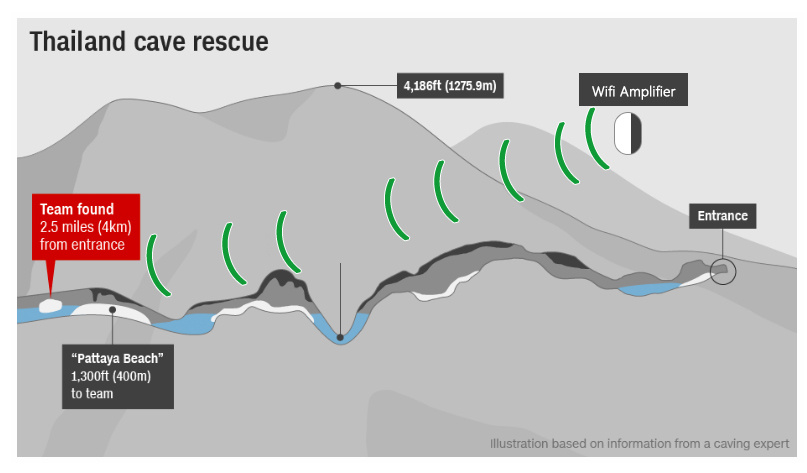

Customer Service
1-888-583-5941
Maybe your Netflix or Hulu cuts out when bringing your laptop to the bedroom, maybe your favorite bands go silent when busting out sweet dance moves in the shower (we won't tell).
Dead zones are easily one of the most annoying Wi-Fi problems. Don't panic — there is hope. You can avoid, find and fix pesky dead zones with this revolutionary device.
Stop being frustrated with long loading times or video buffering. These fast load times will leave you and your family with hours of worry free, blazing-fast internet.
Buffering can ruin your video streaming experience while being detrimental to those who profit from your viewing. Tired of the rotating circle appearing on your screen? Amped Wifi promises to make a difference.
Simply plug-in Amped WiFi™ to automatically connect to your existing WiFi network. Its so easy-to-use and its compatible with every USA Internet Service Provider (ISP).
Amped WiFi™ is a powerful, efficient, strong WI-FI DEVICE that was developed from a military technology called “signal amped transmission”. This is the same type of technology that you may have all heard about during the heroic rescue of the Thai Soccer Team that was trapped in a cave.
One of the problems was that the solid rock walls of the caves blocked all radio transmission, but an Israeli super-high-tech company developed a system that allowed many walkie talkies to capture and boost a weak signal so that it could travel all the way through the cave to all the rescue divers.
The average home internet user will experience a drop in signal for WiFi at least once a day. Poor internet coverage across the United States, and within the average American home, is a huge problem. Amped WiFi™ was designed and manufactured to solve this problem. It's easy to install, connects to your existing network, and acts as a signal amplifier.
If you want to banish buffering for good, while benefiting from an easy-to-install product that doesn't require a computer technician, treating your family to Amped WiFi™ is a good idea. It's the gift of fast internet everyone will appreciate. The best part is, this exceptional WiFi amplifier is currently discounted by 63% Off.
Don't be confined to your home when you want to access your internet. Amped WiFi™ gives you the freedom to stream and surf on any level of your house, both indoors or outdoors. " Amped WiFi™ gives you peace of mind that you can stream videos without needing to wait for them to buffer. The best part is, every member of the family can benefit from Amped WiFi™ at any time."
Due to overwhelming demand, inventory has been difficult to maintain. As of today there is a limited supply of Amped WiFi™. Click the Button below to find out if they are still available at a 63% discount..